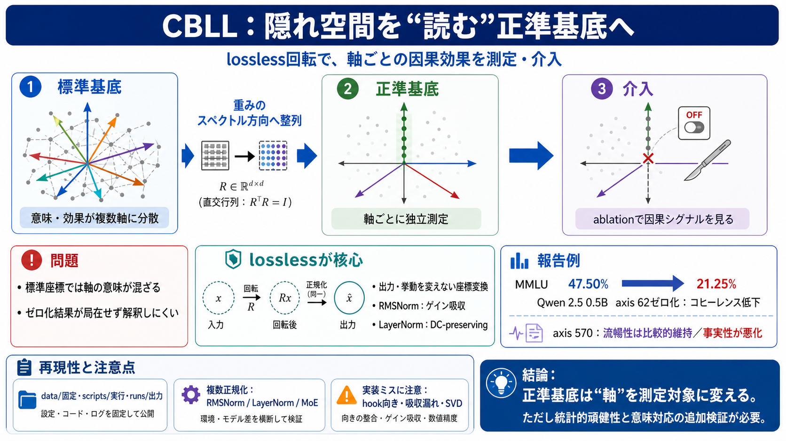

現象
軸が混ざり、ablation（ゼロ化）の結果が局在しない

Transformer LLMの隠れ状態を、モデル固有のスペクトル方向に合わせたlosslessな座標系へ回し、軸ごとに測定・介入できるようにする研究（再現可能実装）。
隠れ状態ベクトルは同じ情報でも、どの基底（座標軸の取り方）で見ているかで「軸ごとの意味」が変わる。
そのため標準基底では、因果効果が散らばり“どの軸が何を担うか”が掴みにくい。
標準座標は“散らばった像”を映すだけ。canonical basisは、モデル側のスペクトル構造に合わせて画像の軸を再配置し、像を単軸に寄せる（測定しやすくする）。
canonical basisは、隠れ状態の座標系を「モデルの重みのスペクトル方向」に対応させる回転・再整列として定義される。
狙いは各軸を独立に観測・ゼロ化しても、“座標変換の副作用”ではなくモデル構造の因果を測ること。
基底変換後もモデルの出力（例：PPLや推論挙動）を変えない必要がある。
そのためにRMSNorm / LayerNormの性質を正しく“吸収”し、回転が整合する条件を満たす。
正準基底では、従来散らばっていた現象が単一軸へ局在化し得ると報告されている。
そのため軸単位のアブレーションが、より強い因果的シグナルとして現れる。
特定軸（axis 62）をゼロにすると、MMLUが47.50%から21.25%へ大きく低下する。
同時に出力のコヒーレンスも破壊されたとされる。
逆に、相関の強い軸（axis 570）をゼロ化すると、流暢性は比較的保たれる一方で事実性が劣化する、と報告されている。
軸が異なる側面を担う“分業”を示唆する。
正準基底により、層をまたいだ構造や、呼吸（respiration）の位相変化など、複数の測定が“軸ごとの対象”として整理されている。
さらにbipolar oscillator（正極/負極ペア）やRich club構造など、多面的に観測する。
数値はdata/に固定され、fresh runはruns/へ出力されるがコミットされない運用が述べられている。
検証はPython one-linerやGPU再現、demoでの即時介入など、実験科学としての手順が用意される。
Qwen（RMSNorm）だけでなく、Pythia（LayerNorm）ではDC-preserving rotationでlosslessを成立させる方針が述べられる。
さらにOLMoE（MoE）では専門家単位の整合まで測っており、単一モデルの偶然でない可能性が検討されている。
hookの向き（行列規約の取り違え）、RMSNormゲイン吸収漏れ、randomized SVD回避など、失敗要因が具体的に整理されている。
この“品質管理”が、解釈の妥当性を支える。
強みは、概念の主張がscripts/とdata/で再現可能に結びついている点。
一方で、統計的頑健性（サンプル設計・再現回数・偶然性）や普遍性、意味論的対応は追加確認が必要。
CBLLは、隠れ空間を正準基底へ変換することで、軸単位のablationを“解釈しやすい計量”へ接続する。
lossless（RMSNorm/LayerNorm整合）があるからこそ、観測・介入の因果をモデル構造として扱える。
統計設計の詳細、軸の安定性（モデル/条件差）、軸操作の意味論的対応は、paper本文と各scripts実装で裏取り。 （英）canonical basis / （日）正準基底
No references found